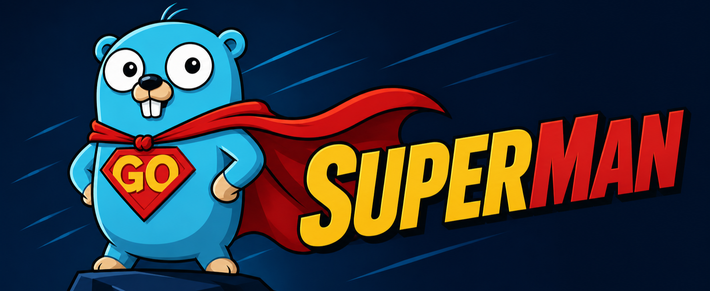

AI4Next Open Source Project
Superman

Overview
产品定位
Superman 不是一个只会回答问题的聊天壳，也不是把所有能力塞进一个巨大 prompt 的单体 Agent。它面向真实工作流：能读写文件、执行命令、调用外部工具、委托专家、保留长期记忆，并在任务完成后把经验压缩成可复用的事实、流程和专家能力。
它的核心目标是让 AI Agent 从“一次性对话”变成“可长期协作的自治工作伙伴”：当前任务要能完成，历史任务要能沉淀，系统能力要能在边界内进化。
一句话理解 Superman
Superman 是一个面向工程实践的自治 Agent 运行时。它把模型、工具、文件系统、会话、记忆、专家、Hook、MCP 和即时通信入口组织在同一个 CLI 产品中，让用户可以从终端、脚本或聊天平台发起任务，并在可检查的本地 workspace 中保留完整运行痕迹。
6内建工具
11生命周期 Hook
多模型OpenAI / Gemini / Claude / DeepSeek / Ollama
多入口TUI / CLI / IM Server
不是一次性聊天
Superman 将对话、工具调用、文件修订、运行事件和沉淀后的记忆保存下来。它关心一次任务的完成，也关心完成之后哪些经验值得进入长期系统。
不是无边界自改写
进化不是随意改 prompt。主 Agent、专家、evolver、meta evolver 各自拥有不同的存储位置和责任边界，学习结果必须落入明确的文件或会话体系。
不是单一入口产品
你可以在 TUI 中交互，可以用 sm run 做脚本化执行，也可以用 sm im serve 把同一套 Agent 能力接入企业聊天工具。
不是封闭工具箱
内建工具覆盖本地执行和文件操作，MCP 接外部工具服务，Skill 复用技能说明，Hook 接入组织自己的审批、审计、拦截和通知流程。
产品关键词：有状态、可审计、可扩展、专家协同、分层进化、本地文件系统优先。